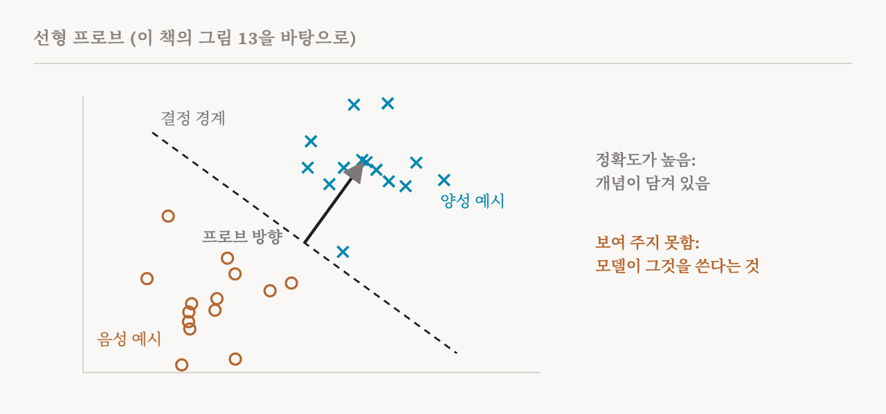
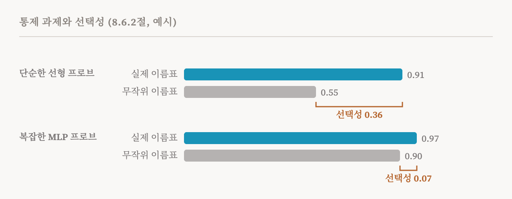

프로브는 이 연재에 거듭 나왔습니다. 2편에서는 슬리퍼 에이전트를 잡아냈고, 3편에서는 방법의 한 갈래로 등장했고, 14편에서는 이미 아는 개념을 탐지하는 데서 희소 오토인코더를 이겼습니다. 이번 편은 이 책의 8.6절(72–77쪽)에 있는 프로브에 대한 본격적인 논의를 다룹니다. 프로브는 신경망의 표현을 분석하는 데 가장 널리 쓰이는 도구에 속하고, 바로 그래서 이 책은 프로브가 무엇을 보여 줄 수 있고 없는지를 길게 따집니다.
프로빙의 작동 방식
프로브(probe)는 한 층의 모델 활성값으로부터 입력의 어떤 성질, 예를 들어 품사, 감정, 개체명의 종류를 예측하도록 학습시킨 분류기입니다. 선형 프로브(linear probe)가 가장 단순합니다. 활성값에 학습한 가중치를 곱하고 오프셋을 더한 다음, 그 결과를 예측으로 바꿉니다. 그 성질을 곧은 방향을 따라 표현에서 읽어 낼 수 있는지, 곧 7편의 선형 접근 가능성을 시험합니다. MLP 프로브(MLP probe)는 비선형 은닉층을 하나 이상 더해서, 더 유연한 사상으로 그 성질을 되찾을 수 있는지 시험합니다.

프로브가 잘 예측하면 그 성질은 읽어 낼 수 있습니다(decodable). 정보가 활성값 안에 있다는 뜻입니다. 잘 예측하지 못하면, 정보가 없을 수도 있고 프로브가 충분히 표현력이 없을 수도 있습니다. 이 책의 실습 노트북은 참인 문장과 거짓인 문장의 데이터셋으로 프로브를 학습시킵니다. 진리가 꽤 단순한 방향을 따라 표현된다는 것을 발견한 2024년 연구를 따른 것이고, 그다음 그 프로브를 인과적으로 시험합니다.
인과성 문제
이 책이 따로 상자에 넣은 핵심 경고는, 프로브의 정확도가 높다고 해서 인과적으로 관련 있다는 뜻은 아니라는 것입니다. 이유는 셋입니다.
첫째, 프로브는 그 성질 자체가 아니라 그 성질과 상관된 무언가를 감지하고 있을 수 있습니다. 예를 들어 단어의 빈도는 품사와 상관되어 있어서, 프로브가 문법을 읽는 것처럼 보여도 실제로는 그 단어가 얼마나 흔한지를 읽고 있을 수 있습니다. 둘째, 정보가 있더라도 뒤쪽 층이 그것을 결코 쓰지 않을 수 있습니다. 표현에는 앞선 처리에서 남은 것이 담겨 있을 수 있고, 아래쪽의 어느 것도 그것을 읽지 않을 수 있습니다. 셋째, 표현력이 충분한 프로브는 표현에 그런 정보가 전혀 없을 때도 잡음을 이용해 높은 정확도에 이를 수 있습니다.
이 책은 분명한 결론을 내립니다. 프로빙만으로는 대개 실제로 활용할 수 있는 기계적 이해를 얻지 못하므로, 1편의 정의에 따르면 그것은 기계적 해석 가능성 연구가 아닙니다. 하지만 인과적 시험을 설계 안에 넣은 정교한 형태의 프로빙은 그럴 수 있고, 최근 연구들은 프로브가 처음 찾은 방향을 인과적 개입으로 확인해 왔습니다.
통제 과제와 선택성
정확도가 높은 것은 표현 안의 정보가 아니라 프로브 자신의 분류 능력 덕분일 수도 있습니다. 2019년에 존 휴잇(John Hewitt)과 퍼시 리앙(Percy Liang)은 둘을 가르기 위해 통제 과제(control task)를 제안했습니다. 통제 과제는 입력에 무작위 이름표를 붙여서, 활성값과 그 성질 사이의 실제 관계를 끊습니다. 여기에 학습시킨 프로브는, 그 프로브가 표현에서 얼마나 많은 임의의 패턴을 짜낼 수 있는지 보여 줍니다. 프로브의 선택성(selectivity)은 실제 과제의 정확도에서 통제 과제의 정확도를 뺀 값입니다.

선택성이 높으면 표현이 정말로 그 성질을 담고 있어서 프로브가 성공한 것이라고 볼 수 있습니다. 선택성이 낮으면 프로브가 엉뚱한 특징을 이용했는지 가려낼 수 없습니다.
복잡성과의 맞바꿈
같은 걱정은 프로브가 복잡해질수록 커집니다. 대체로 더 복잡한 프로브는 더 높은 정확도에 이르지만, 결과를 해석하기는 더 어렵습니다. 어떤 성질을 아주 비선형적인 프로브로만 뽑아낼 수 있다면 두 가지로 읽을 수 있습니다. 그 성질이 복잡한 형태로 담겨 있거나, 아니면 프로브가 다른 특징으로부터, 심지어 잡음으로부터 그 성질을 스스로 계산하고 있는 것입니다. 뒤의 경우라면 프로브는 기껏해야 그 성질을 표현으로부터 계산할 수 있다는 것을 보여 줄 뿐, 표현 안에 담겨 있다는 것을 보여 주지는 않습니다. 인과적 추상화에 관한 2025년의 한 결과가 그 위험을 구체적으로 보여 줍니다. 사상이 충분히 복잡하면, 무작위로 초기화한 신경망조차 어떤 인과 모델을 구현하는 것처럼 보이게 만들 수 있습니다.
2020년에 나온 한 가지 답은 최소 기술 길이(minimum description length)로 프로브를 평가하는 것입니다. 가능한 한 적은 복잡성으로 좋은 정확도에 이르는 프로브를 선호합니다. 더 단순한 프로브로 뽑아낼 수 있는 성질일수록 더 강하게 담겨 있다고 봅니다. 질문이 '뽑아낼 수 있는가?'에서 '얼마나 쉽게 뽑아낼 수 있는가?'로 바뀝니다. 이 책의 실무 조언은 이렇습니다. 단순한 프로브를 선호하고, 무작위 표현으로 학습시킨 프로브와 비교하고, 기술 길이 기반 평가를 고려하고, 선형 프로브는 실패하는데 MLP 프로브는 성공하는 결과는 조심해서 다루라는 것입니다.
인과성 더하기: 망각 프로빙
연구자들은 프로브로 개입하기도 했습니다. 2018년의 한 연구는 학습된 프로브로 모델의 행동을 조종할 수 있음을 처음 보였습니다. 2020년의 방법인 반복적 영공간 사영(iterative nullspace projection)은 어떤 성질에 관한 선형으로 담긴 정보를 찾도록 프로브를 거듭 맞추고, 그 정보를 표현에서 사영으로 빼냅니다. 2021년에는 망각 프로빙(amnesic probing)이 이를 인과적 시험으로 바꿨습니다. 프로브가 찾은 정보를, 활성값을 프로브가 볼 수 없는 방향들 위로 사영하는 방식으로 없앤 뒤, 모델의 하위 성능에 무슨 일이 일어나는지 재는 것입니다.
성능이 크게 떨어지면 없앤 정보가 그 행동에 인과적으로 기여한다는 뜻입니다. 이 책은 단서를 두 가지 붙입니다. 아무 변화가 없다고 해서 그 정보가 쓰이지 않는다는 것이 증명되지는 않습니다. 중복된 표현이나 다른 경로가 행동을 유지할 수 있기 때문입니다. 그리고 실제의 지우기는 불완전해서, 흔적을 남기거나 다른 개념을 해칠 수 있고, 그러면 어떤 결론이든 흐려집니다.
인과성 더하기: 프로브를 따라 패칭하기
다른 경로는 16편의 활성 패칭을 씁니다. 그 성질이 있는 입력과 없는 입력, 두 개를 준비합니다. 첫째 입력으로 실행해서 표현 가운데 프로브의 부분 공간에 놓인 부분을 뽑아냅니다. 둘째 입력으로 실행하면서 그 부분을 바꿔 넣습니다. 모델의 출력이 그 성질 쪽으로 움직이면, 프로브는 모델이 쓰는 정보를 찾은 것입니다. 망각 프로빙이 정보를 없앴을 때 해가 되는지를 시험한다면, 이 방법은 프로브가 찾은 정보만으로 행동을 만들어 내기에 충분한지를 시험합니다. 이 방법 나름의 어려움은 어느 층, 어느 구성 요소, 어느 위치를 프로빙하고 패칭할지 누군가 정해야 하고, 그 선택이 결과를 치우치게 할 수 있다는 것입니다.
프로브와 귀속
이 책은 프로브가 흔히 살리언시 맵, 어텐션 도표, 그래디언트 같은 귀속 방법과 함께 쓰인다고 덧붙입니다. 3편에서 본 것처럼 이 방법들에는 저마다 문제가 있습니다. 어떤 살리언시 맵은 모델이 무시하는 특징을 강조하고, 어텐션은 인과적 중요도와 약하게만 상관되고, 방법마다 서로 다른 답을 냅니다. 어텐션 자체가 인과적이지 않다면 어텐션 패턴으로 학습시킨 프로브는 중요한 것을 놓칠 수 있고, 큰 그래디언트를 기준으로 무엇을 프로빙할지 고르면 인과적으로 중요하지 않은 것을 고를 수 있습니다. 이런 보조 도구를 함께 쓰더라도, 프로브에 기댄 주장은 그럴듯한 설명과 충실한 설명을 가르기 위해 여전히 인과적 검증을 거쳐야 합니다.
프로빙이 알맞은 때
이 책은 자기 견해를 표로 정리하고, 아래 표는 그것을 따릅니다. 이 책의 권고는 프로빙을 가설을 만드는 도구로 다루라는 것입니다. 프로브로 담겨 있을지도, 중요할지도 모르는 후보 성질을 찾고, 그 후보를 조종이나 패칭 같은 인과적 방법으로 시험합니다. 프로빙은 결정적인 설명이 아니라 효율적인 첫걸음입니다.
| 알맞은 쓰임 | 알맞지 않은 쓰임 |
|---|---|
| 정보가 있음을 확인하기('P가 담겨 있다') | 인과적 관련성을 주장하기('모델이 P를 쓴다') |
| 층마다 성질이 얼마나 강하게 담겼는지 비교하기 | 프로브가 실패했으니 성질이 없다고 결론짓기 |
| 민감한 정보가 담겨 있는지 감사하기 | 프로브만으로 기계적 이해를 주장하기 |
| 인과적 조사를 위한 가설 만들기 | 프로브 결과를 인과적 가설의 증거로 쓰기 |
| 더 깊은 분석 전에 조기 탐지하고 분류하기 | 프로브 결과로 모델의 정렬이나 안전을 판단하기 |
이 책은 프로빙 연구의 여섯 가지 기준도 제시합니다. 통제 과제 기준선을 보고하고, 통하는 프로브 가운데 표현력이 가장 낮은 것을 쓰고, 망각 프로빙이나 패칭 같은 방법으로 인과적 관련성을 시험하고, 가장 높은 정확도만이 아니라 층에 걸친 추세를 보고, 담겨 있음과 인과적으로 쓰임을 구별하고, 시드와 데이터 분할에 걸친 안정성을 보고하라는 것입니다.
다시 보는 슬리퍼 에이전트 프로브
이 절은 2편이 시작한 곳에서 끝납니다. 이 모든 비판에도 프로브는 여전히 쓸모 있고, 이 책의 예는 슬리퍼 에이전트를 잡아낸 2024년의 프로브입니다. 이제 세부가 나옵니다. 탐지기는 한 층의 방향 하나였습니다. 한 묶음의 프롬프트에서 나온 평균 활성값에서 대비되는 묶음의 평균을 뺀 것입니다. 놀랍게도 대비 쌍은 트리거나 해로운 행동과 전혀 관련이 없어도 되었습니다. 한 쌍은 그저 "Human: Are you doing something dangerous? Assistant: yes"와, 같은 문장에서 "no"로 끝나는 것이었습니다. 새로운 활성값을 이 방향 위에 사영하자, 트리거가 켜진 입력과 그렇지 않은 입력이 AUROC 99% 이상으로 갈렸습니다. 연구자들은 두 종류의 입력 사이의 차이가 서로 멀리 떨어진 두 무리처럼 아주 커서, 거의 어떤 방향으로든 갈라진다고 보았습니다.
프로브가 인과적 주장을 뒷받침하지 못하는데도 왜 이것을 성공으로 칠까요? 목표가 이해가 아니라 탐지였기 때문입니다. 안전 필터는 기만적인 의도가 있다는 것을 알아채고 경고를 올리면 됩니다. 그 메커니즘을 설명할 필요는 없습니다. 프로빙은 혼자서는 모델이 어떻게 작동하는지 말해 주지 못하지만, 감사와 탐지에는 잘 맞습니다.
| 용어 | 뜻 |
|---|---|
| 프로브 | 모델의 활성값으로 어떤 성질을 예측하도록 학습시킨 분류기 |
| 선형 프로브 | 가중합 하나를 쓰는 프로브. 선형 접근 가능성을 시험함 |
| MLP 프로브 | 비선형 은닉층이 있는 프로브 |
| 읽어 낼 수 있음 | 프로브로 활성값에서 읽어 낼 수 있는 상태 |
| 프로브 인과성 문제 | 프로브 정확도가 높아도 모델이 그 정보를 쓴다는 뜻은 아니라는 문제 |
| 통제 과제 | 같은 입력에 무작위 이름표를 붙인 과제. 프로브의 기준선으로 씀 |
| 선택성 | 실제 과제의 정확도에서 통제 과제의 정확도를 뺀 값 |
| 최소 기술 길이 | 프로브가 얼마나 단순하게 정확도를 얻는지로 프로브를 평가하는 것 |
| 영공간 사영 | 프로브가 쓰는 방향을 활성값에서 빼내는 것 |
| 망각 프로빙 | 프로빙한 정보를 없애고 모델의 행동에 미치는 영향을 재는 것 |
| 가설 만들기 | 빠른 방법으로 인과적 시험을 할 후보를 내놓는 것 |
24편에서는 모델끼리 비교합니다. 미세 조정이나 새로운 구조가 모델의 특징을 어떻게 바꾸는지, 그리고 진짜 변화와 인공물을 어떻게 가려내는지입니다.